Assessment review · 5 November 2026NPSA Track: strong direction, incomplete feedback loops
Review of the supplied local prototype, using captured browser states and source inspection. No source files were edited. The project changed during review (including its reference-number format); screenshots record the observed state at each step.
Priority: connect officer/citizen state; fix missing-reference recovery; align offline promises with behaviour; finish modal accessibility and permission consistency; improve document preview realism.
Verification: TypeScript and production build passed during this review. Citizen receipt flow completed; officer save tested; request/review panels inspected; USSD navigation exercised through linked applications. No real SMS, carrier service, upload analysis, backend security, translation accuracy or screen-reader compliance was verified.
STEP 01 · Needs workTracking entry
Clear reference field and visible language control. The missing-reference link produced no navigation; CitizenApp returns Lookup whenever application is null, before it checks the assisted step.
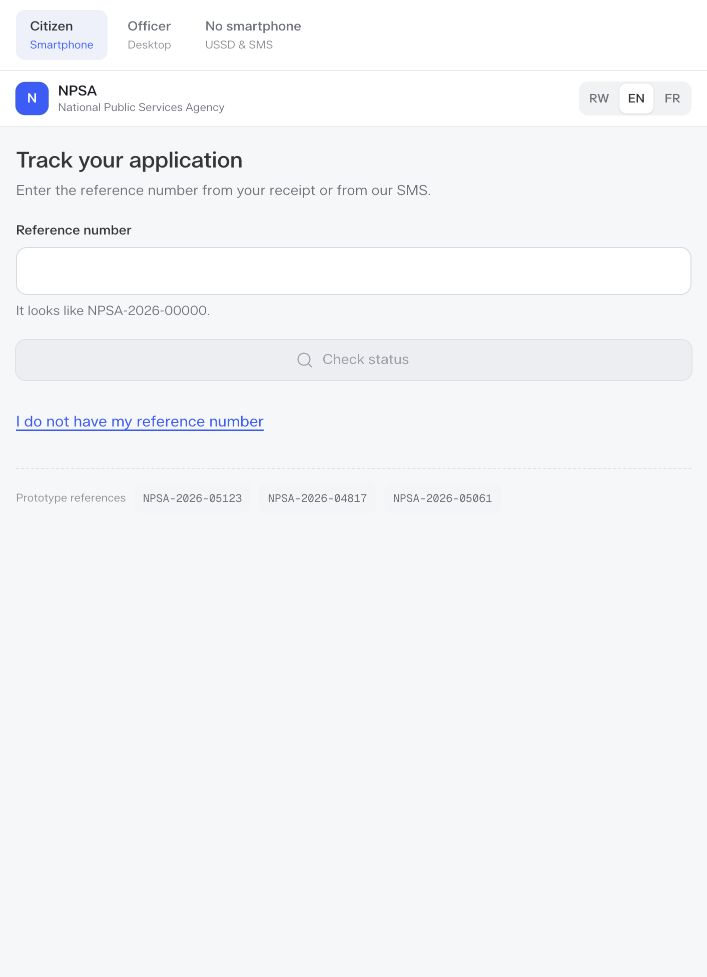
STEP 02 · StrongApplication status
Status and required action lead the page. The paused stage and responsible department are clear. Upcoming stages and secondary text are faint; verify their contrast.
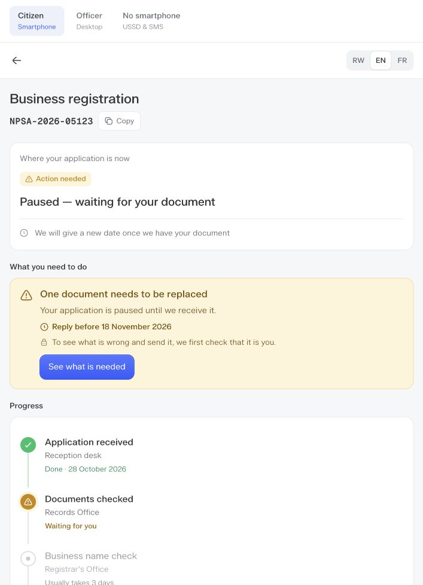
STEP 03 · Good foundationVerification
Verification is deferred until document access. Alternative channels and helper information exist. Office-only helper registration is an assumption that can reintroduce travel; explain a remote fallback.
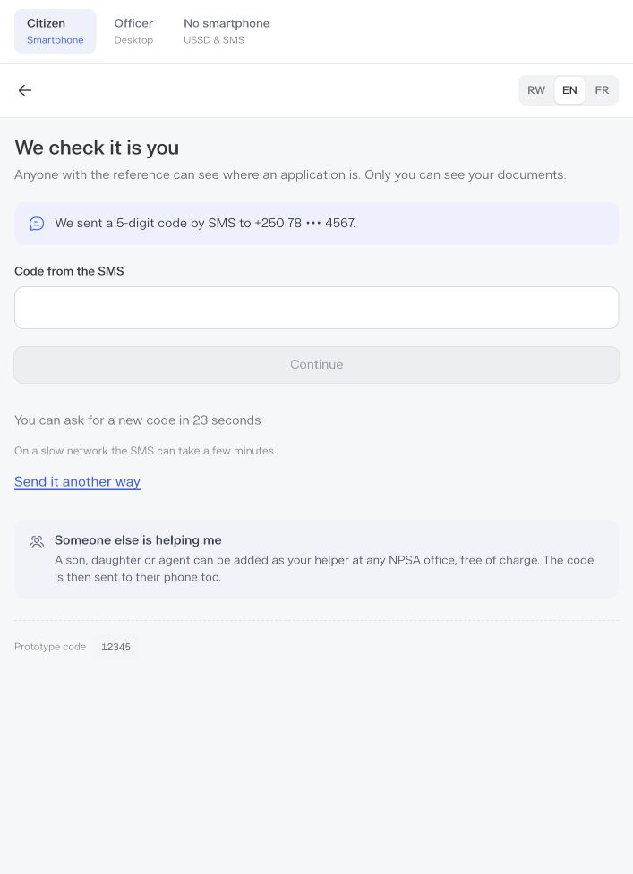
STEP 04 · Good foundationDocument explanation
Specific rejection reasons and photo guidance are useful. Replace the abstract document illustration with a fictional readable example. Positive and negative photo tips need explicit labels for assistive technology.
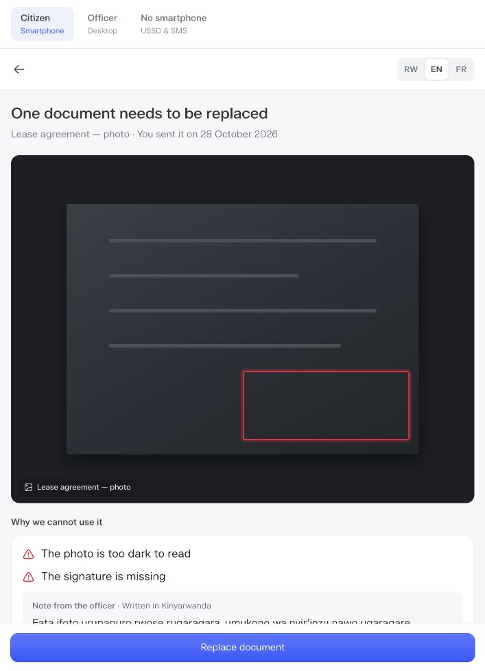
STEP 05 · Needs accessibility workUpload source sheet
Bottom sheet is appropriate for a short choice. It has dialog semantics and Escape handling. Source inspection finds no Tab focus trap or inert background; focus restoration effects also depend on inline callbacks.
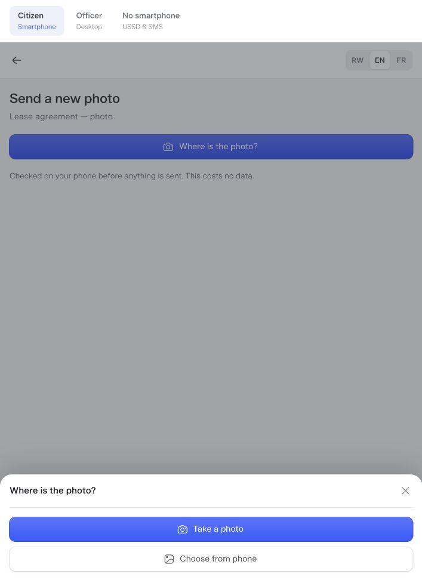
STEP 06 · Concept works; simulationPhoto rejected at 390px
The first capture always fails and the second passes by attempt number. Useful demonstration of early feedback, but not real photo analysis. Present this as a prototype assumption.
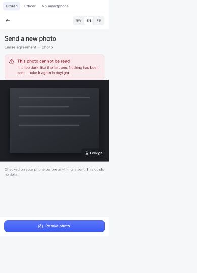
STEP 07 · Needs workOffline upload
Saved/sending/received is a useful distinction. The prototype says it will send automatically and nothing is lost, but state is memory-only and reconnecting does not trigger send. Preview Enlarge has no handler.
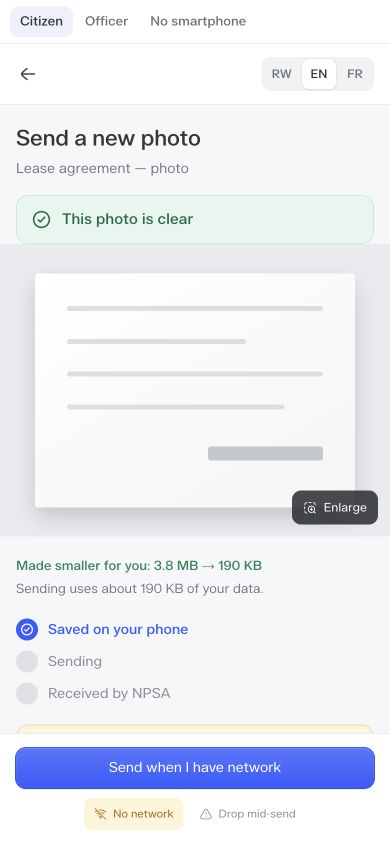
STEP 08 · StrongReceipt confirmation
Explicitly distinguishes received from accepted and states the next step. The two-working-day promise and SMS sender are illustrative assumptions, not validated service commitments.
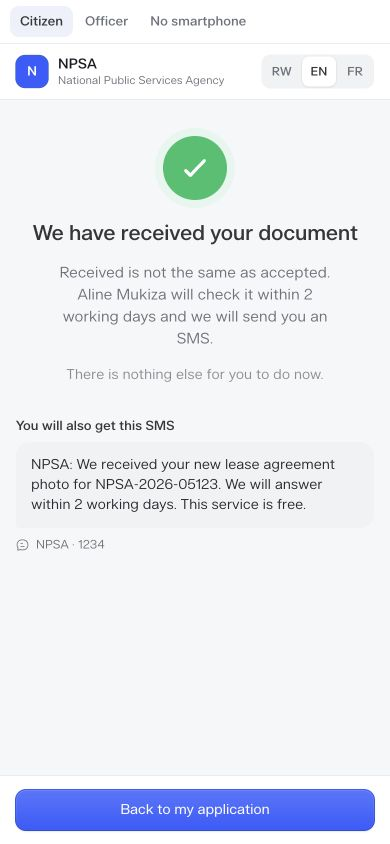
STEP 09 · Good foundationOfficer search
Search covers reference, name and phone. A response awaiting officer review is only labelled In review; add a filter or queue for citizen replies. Keyboard row activation needs checking.
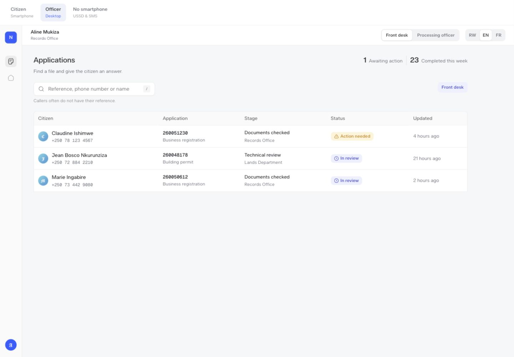
STEP 10 · Strong information structureOfficer file
What the citizen sees is an excellent call-handling aid. Documents use status icons without equally clear text. Front-desk permissions do not consistently cover document acceptance/rejection.
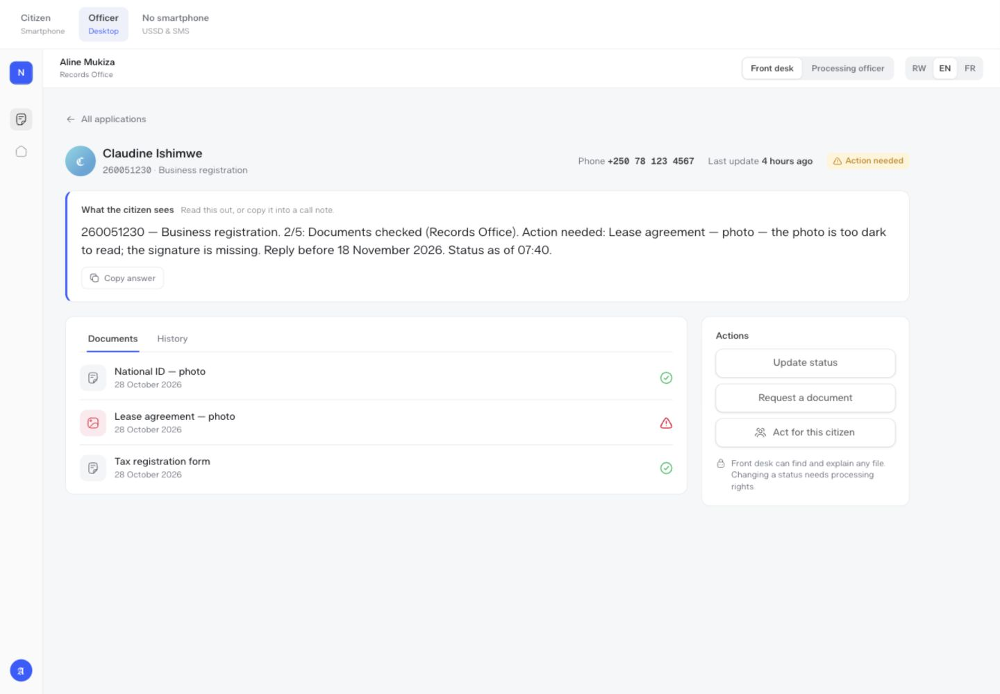
STEP 11 · Needs workStatus update panel
Panel is suitable for contextual editing, but permits arbitrary stage selection. Add valid transition rules, a citizen-facing explanation and a preview.
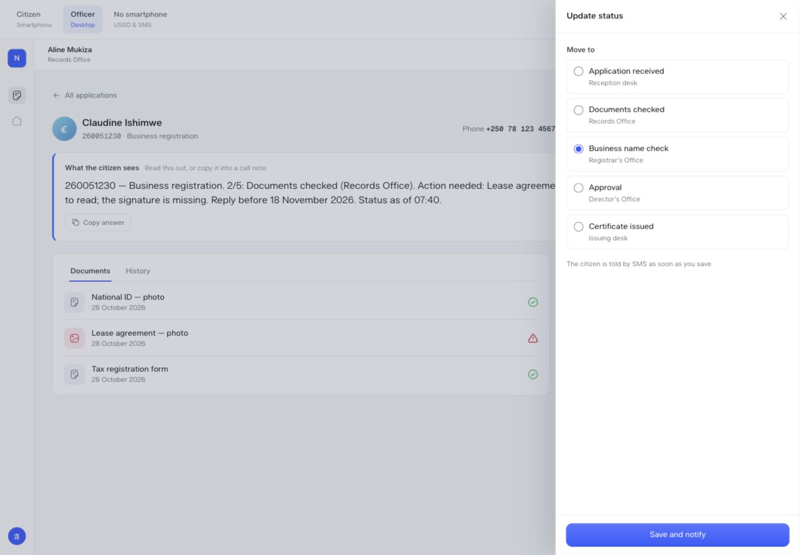
STEP 12 · High-priority issueSaved-status result
Save displayed Moved to Business name check while the file still showed Documents checked and Action needed. Source confirms save/request/review handlers only announce a toast rather than updating application state.
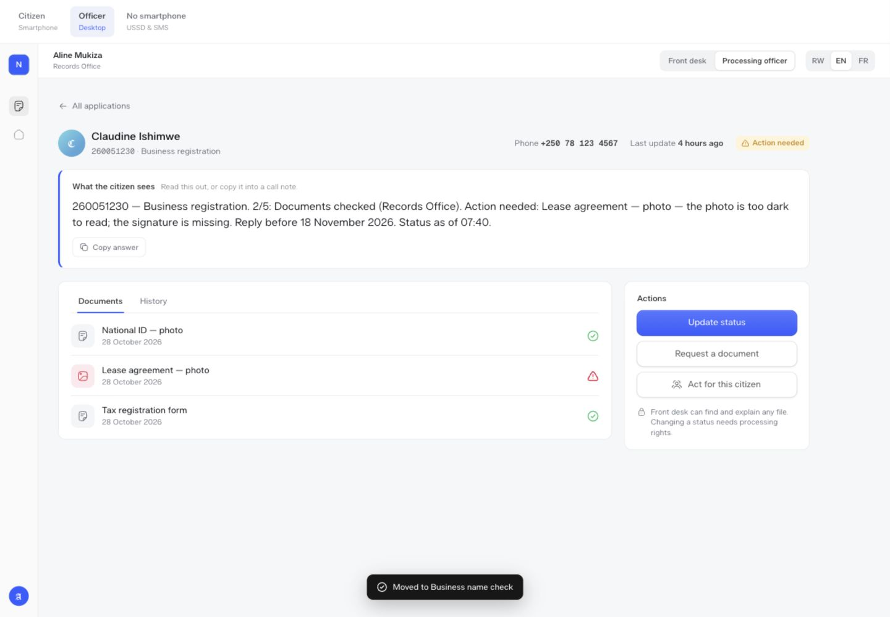
STEP 13 · Strong form; incomplete effectDocument request
Pretranslated reasons and the preview in the citizen language are thoughtful. Support a missing document explicitly, avoid preselecting an unrelated rejection reason, and make deadlines policy-dependent. Sending currently only announces success.
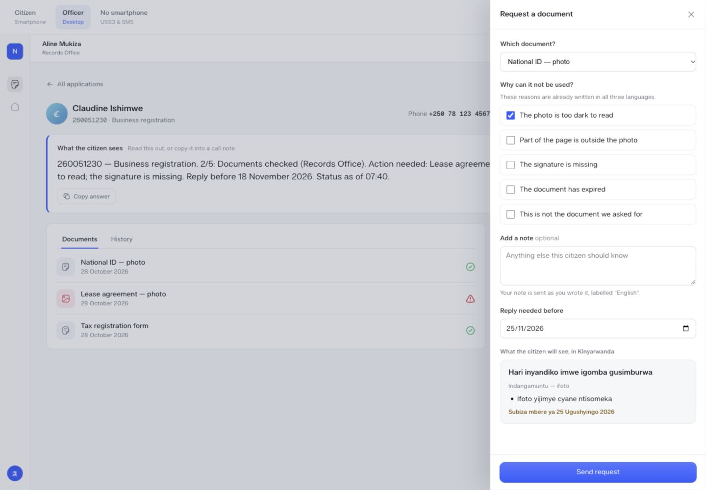
STEP 14 · Needs workReview citizen response
Replacement context is visible. Accept and Not usable actions are available in the front-desk view, and rejection does not open a new-reason flow. Ensure awaiting review is visually distinct from accepted.
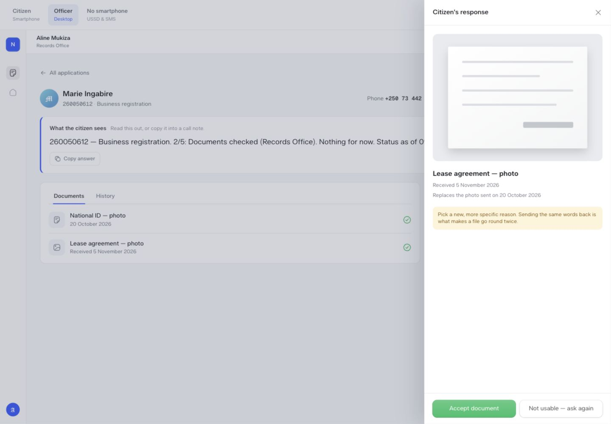
STEP 15 · Strong inclusion conceptUSSD and SMS overview
Numeric navigation, language choice, timeout demonstration and push SMS cover the brief well. Shortcode, free service on every network and carrier limits need to be labelled as assumptions; no carrier validation was performed.
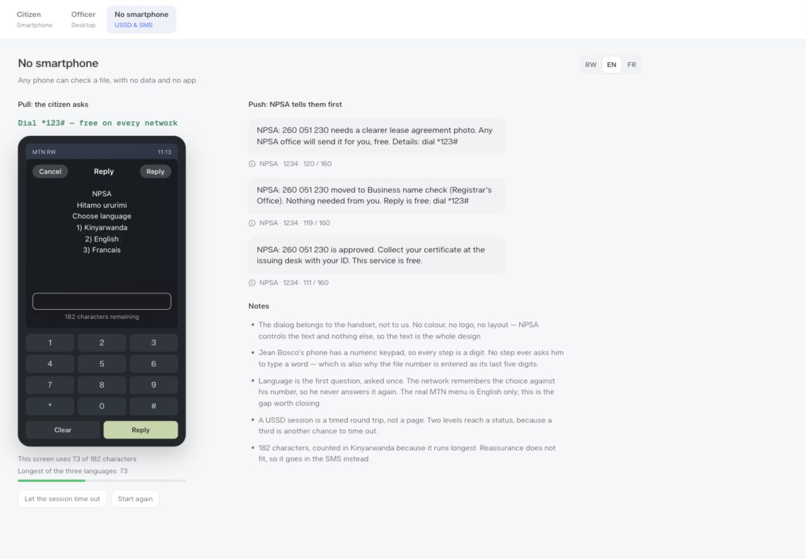
STEP 16 · Navigation observedUSSD linked applications
English selection, main menu and My applications were exercised. The same-session subscriber-to-file association and helper access need an explanation. Full live-network status delivery was not tested.
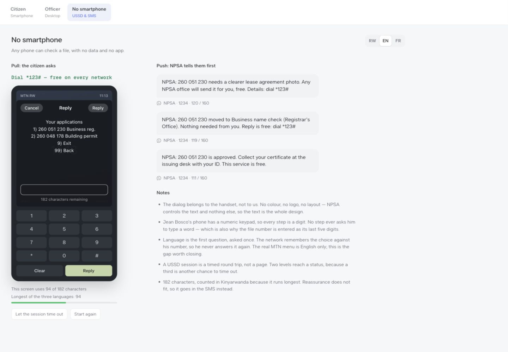